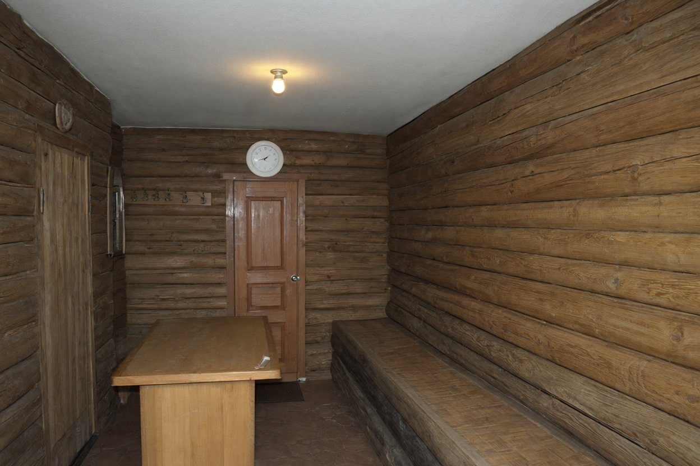

м. Харків, вул. Пушкінська, 40, оф. 12 · тел./факс (057) 714-30-30
Акт огляду лазні
справа № 117/07 · вт 30.10.2007
Місце
б/в «Тиха заводь», Чугуївський р-н, лазня (на березі ставка)
Огляд
вт 30.10.2007, з 12:00 до 13:15; лазню відчинила Людмила Кравець, адміністраторка
Підстава
з дозволу адміністрації; міліція огляд закінчила, лазню дозволено прибирати й користуватися
Провів
Шульга В.І., група № 2
Загальне. Лазня прибрана: підлога вимита, у кімнаті відпочинку провітрено. Прибирала Людмила у понеділок.
Парилка. Електрична кам'янка «Harvia», термостат із шкалою до 110 °C, зараз вимкнений. Полиці дерев'яні, дві; нижня — близько двох метрів. Двері парилки відчиняються назовні, тобто в кімнату відпочинку; ручка з обох боків, замків і засувів немає.
Кімната відпочинку. Стіл; уздовж стіни дубова лава близько двох метрів завдовжки. Вага — велика: спробували зсунути вдвох з Людмилою — підняти не можна, лише тягти по підлозі. Вішак із гачками для халатів біля задніх дверей. Вікно виходить на ставок.
Двері. Парадні — з боку доріжки, ключ у адміністраторки. Задні — на кладку, замка немає, зачинені на гачок зсередини.
Інше. Над дверима в передбанник — настінний годинник «Сонар», круглий, білий; новенький, аж блищить. Зі стіни не знімали: глянув знизу — на нижньому ребрі корпусу ще наліпка магазину з ціною (49,90; назва магазину затерта).

Фото В.Ш.: кімната відпочинку, вигляд від вікна. Стіл, лава вздовж стіни, двері в передбанник, над ними годинник. 30.10.